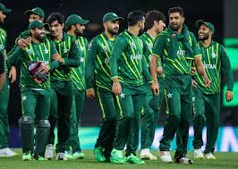
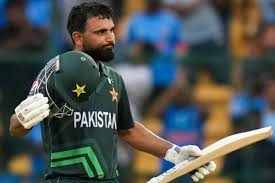
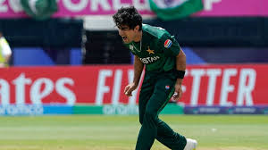

Pakistan T20I Team
2009 T20 World Cup winners with flair and unpredictability.
About Pakistan T20I Team

Country: Pakistan
Home Ground: Various (e.g., Gaddafi Stadium, Lahore)
Captain: Babar Azam
Coach: Gary Kirsten
Pakistan’s T20I team is known for its passionate play and talented players, with a flair for turning games around.
Pakistani Players
Babar Azam (C)
Captain, top-ranked batsman.
Mohammad Rizwan
Wicketkeeper-batsman, reliable.

Fakhar Zaman
Batsman, aggressive opener.
Saim Ayub
Batsman, emerging talent.
Shadab Khan
All-rounder, leg-spinner.
Imad Wasim
All-rounder, left-arm spinner.
Iftikhar Ahmed
All-rounder, middle-order.

Shaheen Afridi
Bowler, pace spearhead.
Haris Rauf
Bowler, express pace.

Naseem Shah
Bowler, swing specialist.
Mohammad Amir
Bowler, left-arm pacer.